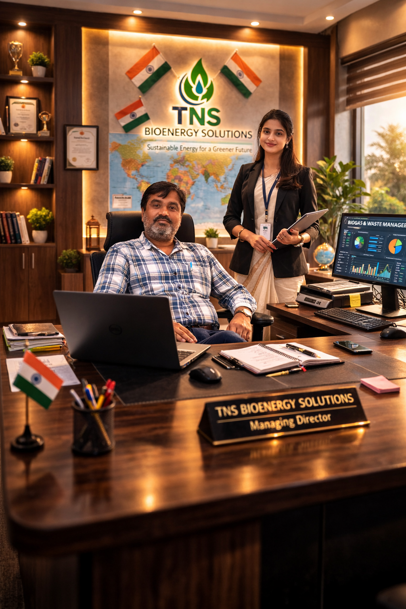

Engineering Stability. Delivering Performance.
TNS BioEnergy Solutions is a forward-looking organization dedicated to advancing sustainable energy solutions through innovative bioenergy technologies. The company focuses on the development, operation, and optimization of Compressed Biogas (CBG) plants and waste-to-energy systems that convert organic waste into clean, renewable fuel.
With a strong commitment to environmental sustainability, TNS BioEnergy Solutions supports India's vision of a greener future by promoting circular economy practices and efficient resource utilization. The company works towards transforming agricultural residue, organic waste, and industrial by-products into valuable renewable energy resources that contribute to energy security and environmental protection.
Our mission is to deliver reliable, efficient, and sustainable bioenergy solutions while maintaining the highest standards of operational excellence, safety, and technological innovation.

Managing Director
Mr. Basant Kumar Tiwari is an accomplished industry professional with over 27 years of extensive experience in the biogas and Compressed Biogas (CBG) sector. Throughout his career, he has been actively involved in the planning, commissioning, and successful operation of multiple bioenergy projects.
His deep technical expertise and strategic leadership have played a significant role in promoting advanced waste-to-energy technologies and improving the efficiency of biogas-based energy systems. Mr. Tiwari has consistently demonstrated strong capabilities in project execution, plant optimization, and sustainable energy development.
Under his leadership, TNS BioEnergy Solutions aims to expand the adoption of renewable bioenergy technologies, contributing to India’s clean energy transition and environmental sustainability.
His vision is centered on developing innovative bioenergy solutions that convert organic waste into valuable energy resources while supporting rural development, reducing carbon emissions, and strengthening the renewable energy ecosystem.
Triloki Nath Sharma
Senior Biogas Process & Stability Specialist
Specialized in CBG plant performance improvement, digester stabilization, OLR optimization, VFA control and structured production monitoring.
VFA monitoring, pH correction strategies, and recovery planning.
Press Mud flow control, OLR balancing and inoculum management.
RBG & CBG performance tracking and process improvement planning.
Email: yourmail@email.com
Location: Gorakhpur, Uttar Pradesh